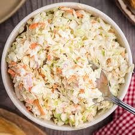

Home
Coleslaw Recipe

Description
Coleslaw is a classic salad made primarily from finely shredded raw cabbage and dressed most commonly with a vinaigrette or mayonnaise. It's a refreshing side dish that pairs well with barbecued meats and sandwiches.
Ingredients
- 1 small head of green cabbage, shredded
- 2 large carrots, grated
- 1 cup mayonnaise
- 2 tablespoons apple cider vinegar
- 1 tablespoon sugar
- Salt and pepper to taste
Steps
- In a large bowl, combine the shredded cabbage and grated carrots.
- In a separate bowl, whisk together the mayonnaise, apple cider vinegar, sugar, salt, and pepper.
- Pour the dressing over the cabbage and carrots, and toss until well combined.
- Refrigerate for at least 1 hour before serving to allow the flavors to meld.